Esta obra de EnergyLabs Brasil, foi licenciada com uma Licença Creative Commons - Atribuição - Partilha nos Mesmos Termos 3.0 Não Adaptada.
Permissões adicionais ao âmbito desta licença podem estar disponíveis em http://www.energylabs.com.br.
Bom, estou fazendo este documento para vocês saberem um meio alternativo de entrar no Chat da EnergyLabs sem ser pela interface Web.
O chat da EnergyLabs usa o sistema IRC (Internet Relay Chat) que foi formalmente documento em 1993. O sistema era comum a tempos atrás, hoje devido a criação de MSN e ICQ este meio ficou sendo menos usado. Porém para a EnergyLabs este é o jeito mais adequado para conversar, pois você não precisa ter registro em nenhum lugar para poder entrar no chat.
Para conectar ao Chat da EnergyLabs através de seu computador, você pode usar qualquer cliente de IRC, nesse tutorial iremos descrever como usar o chamado CyberScript.
Caso deseje apenas os dados para se conectar, aqui vão eles:
Servidor: irc.shadowworld.net
Porta: 6667
Canal: #dangercenter
Primeiro, baixe o CyberScript do seu site oficial: http://www.cyberscript.org/
Após isso inicie a instalação clicando no programa baixado.
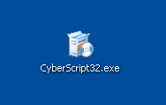
Após isso apenas vá clicando em Avançar no instalador e passando pelas telas.
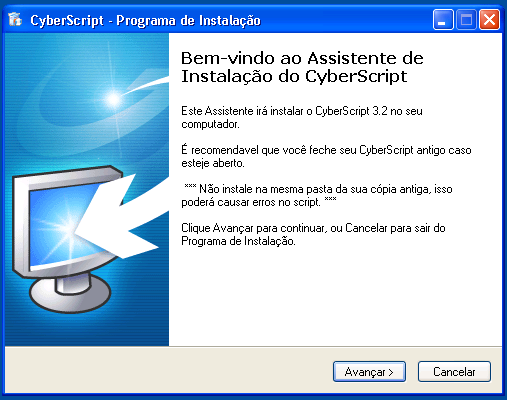
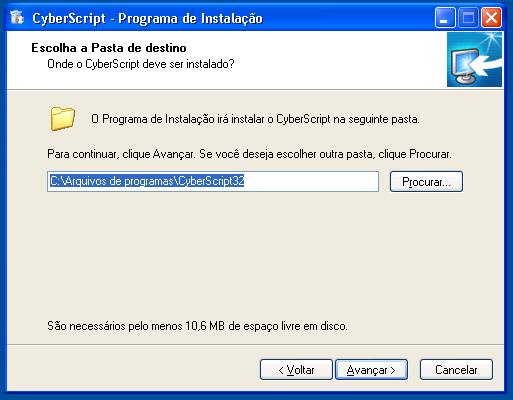
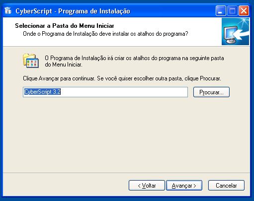
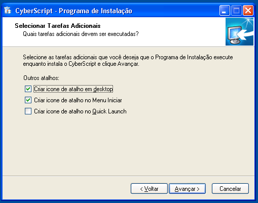
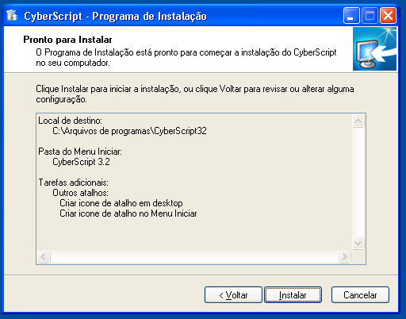
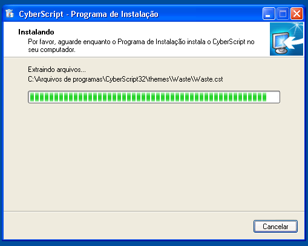
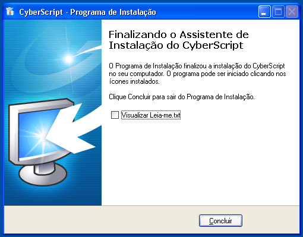
Agora que o CyberScript está instalado, abra-o selecionando no menu inciar.
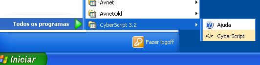
Com ele aberto você terá uma tela semelhante a essa:
Nesta tela aberta, clique em Prosseguir
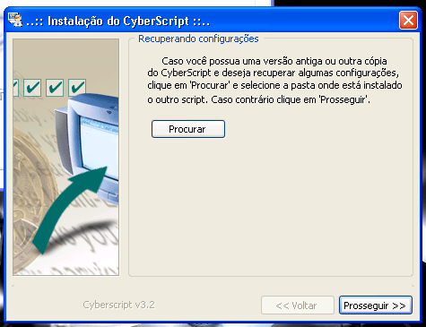
Coloque aqui agora os dados que você usará no servidor.
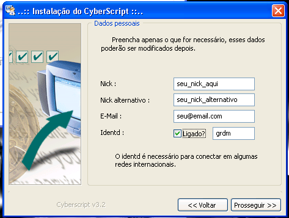
seu_nick_aqui => Coloque seu nickname. Ex: elenic_racerxdl
seu_nick_alternativo => Coloque outro nickname para caso o primeiro não for. Ex: elenic_racerxdl2
[email protected] => Seu email aqui
Deixe o resto como esta, e clique em Prosseguir.
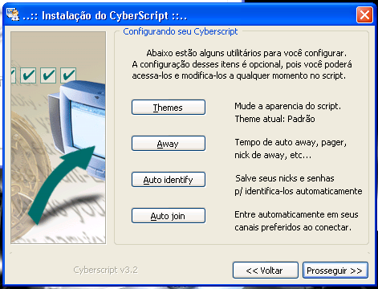
Nesta tela, apenas clique em Prosseguir.
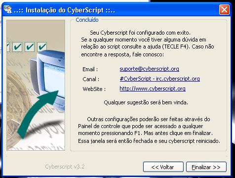
Clique em Finalizar.
Agora vamos configurar o servidor ao qual o CyberScript irá se conectar. Para o Chat da EnergyLabs usamos o servidor ShadowWorld.
Clique no canto superior direito num icone de ferramentas como o abaixo:
Será aberta uma janela de conexão como esta, troque o primeiro campo e coloque seu nome.
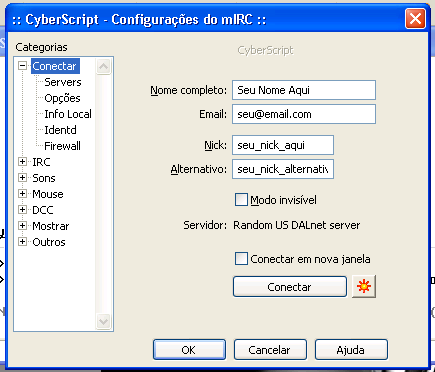
No canto direito, clique em Servers
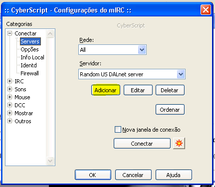
Clique em Adicionar para adicionar um novo servidor, e uma tela semelhante a essa será aberta:
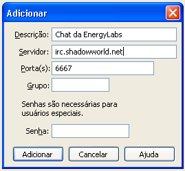
Configure as opções assim:
Descrição => Chat da EnergyLabs
Servidor => irc.shadowworld.net
Porta => 6667
Clique em Adicionar após isso.
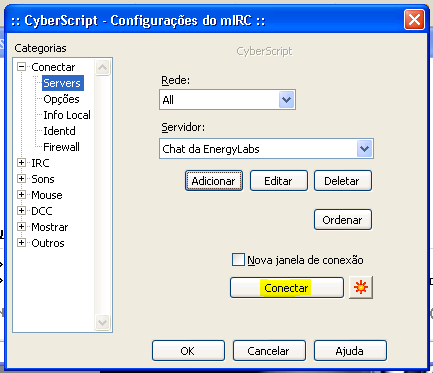
Clique em Conectar e essa janela se fechará. Será iniciada a conexão com o Servidor.
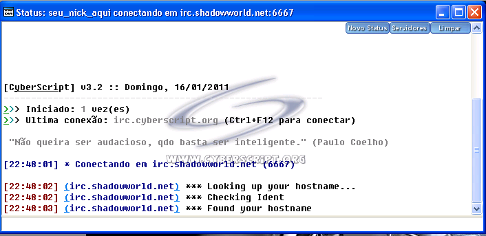
Aguarde até que ele conecte no Servidor. Após a conexão ser efetuada com sucesso outro janela será aberta. A Janela de Seleção.
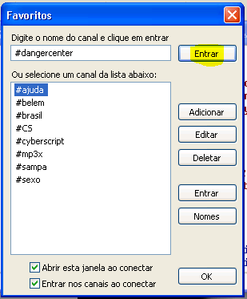
No Nome do canal para entrar, digite #dangercenter e clique em Entrar. Feito isso você estará conectado ao canal da EnergyLabs!
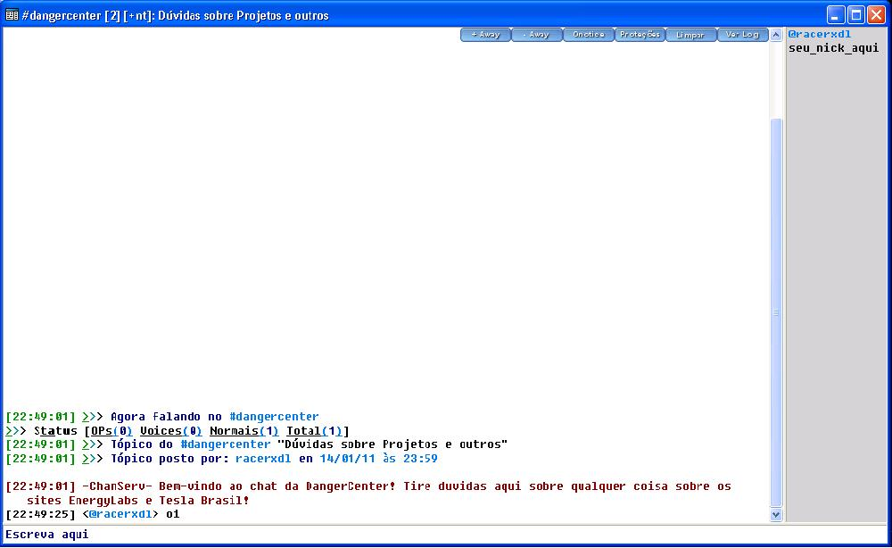
Para efetuar a conexão novamente quando abrir o CyberScript, basta clicar no primeiro icone de menu:
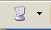
Pronto! Você está conectado ao chat da EnergyLabs! Tire suas dúvidas ai em tempo real!
Esta obra de EnergyLabs Brasil, foi licenciada com uma Licença Creative Commons - Atribuição - Partilha nos Mesmos Termos 3.0 Não Adaptada.
Permissões adicionais ao âmbito desta licença podem estar disponíveis em http://www.energylabs.com.br.